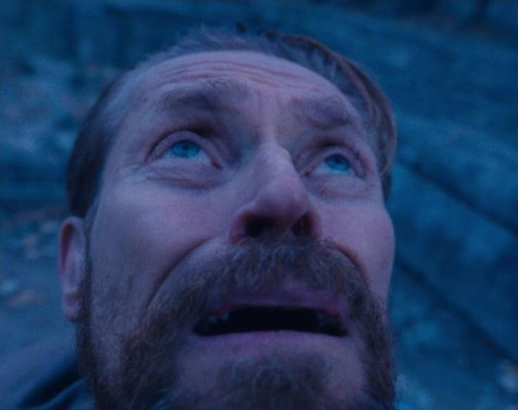
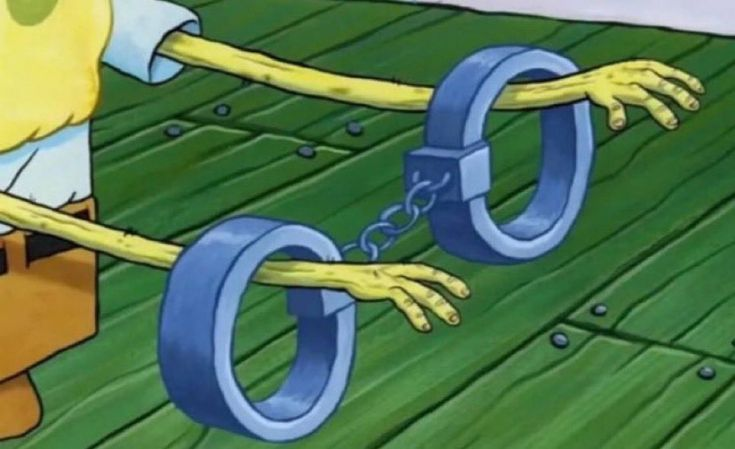
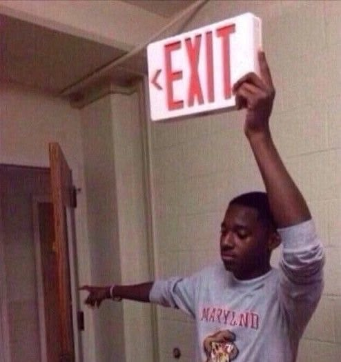

Nie otwieraj oczu. Jak spisz to twoje oczy są zamknięte, podczas snu, wiadomo cos się dzieje wiec te oczy są w twojej wyobraźni otwarte. Kiedy mówimy o paraliżu to mówimy o śnie gdzie wyobrażasz sobie chwile tu i teraz, dlatego lepiej jak na sile zamkniesz oczy i oszczędzisz sobie pewnych widoków. Nie zadziała to zawsze w 100%, z mojego doświadczenia twoje powieki i tak będą w połowie przezroczyste, ale może poczujesz się bezpieczniej.

Nie panikuj. Łatwo by mówić, to tylko rada specjalistów i osób które niesamowicie fascynują się snem i się go nie boją. Ja do takich osób nie należę, na myśl o kombinowaniu z różnymi stanami snu dostaje paranoi, dlatego przekazuje informacje dalej.

Nie rób gwałtownych ruchów. Jeśli chodzi o świadomy sen a paraliż to sprawa się lekko komplikuje. Bywa różnie, ja nie raz wiem odrazu ze mam paraliż, nie raz wierze szczerze ze to dzieje się naprawdę i nie śpię, a nie raz nie wiem i przekonuje się o tym jak jest dopiero po czasie. Dlatego jeżeli wiesz i probujesz się wybudzić na sile, to zacznij od małych kroków, spróbuj ruszyć palcami, mrugac szybko oczami, otworzyć usta. Wiercenie się jak opętany, lub prędzej probowanie się wiercić, wprawia cie w jeszcze większą panikę.
Bardzo szczerze to ta dziecinna obawa ze jak wystaje ci kawałek stopy lub reki to dosięgnie cie potwór, potrafiła się sprawdzić. Ja nikogo nie straszę, ale jednak schowaj ta rękę bo może cie ugryźć jakiś wściekły pies, dosłownie.
Nie rywalizuj ze mną, nie próbuj wybudzać się wiecej niż 15 razy z tego samego paraliżu, czy świadomego snu. Nie warto się w to wkręcać, o ile robisz to celowo. Zostań w miejscu i hang on.
